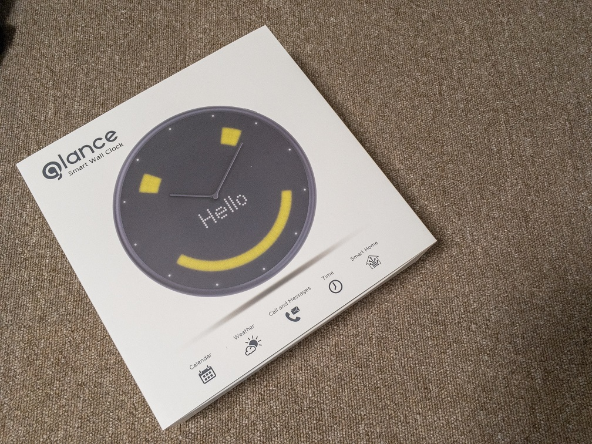
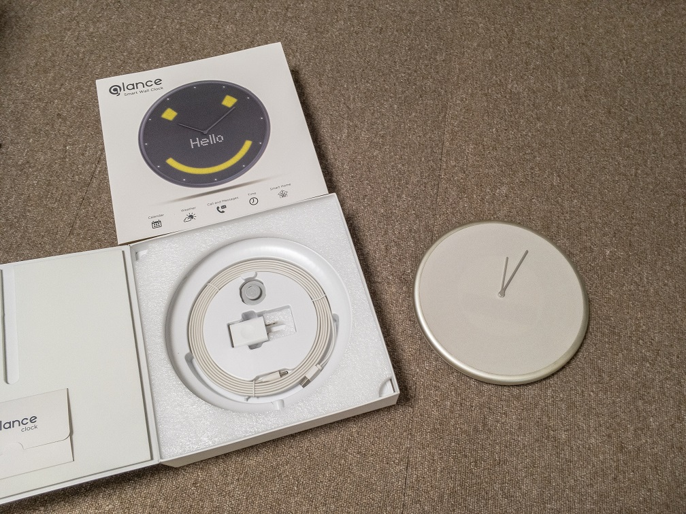
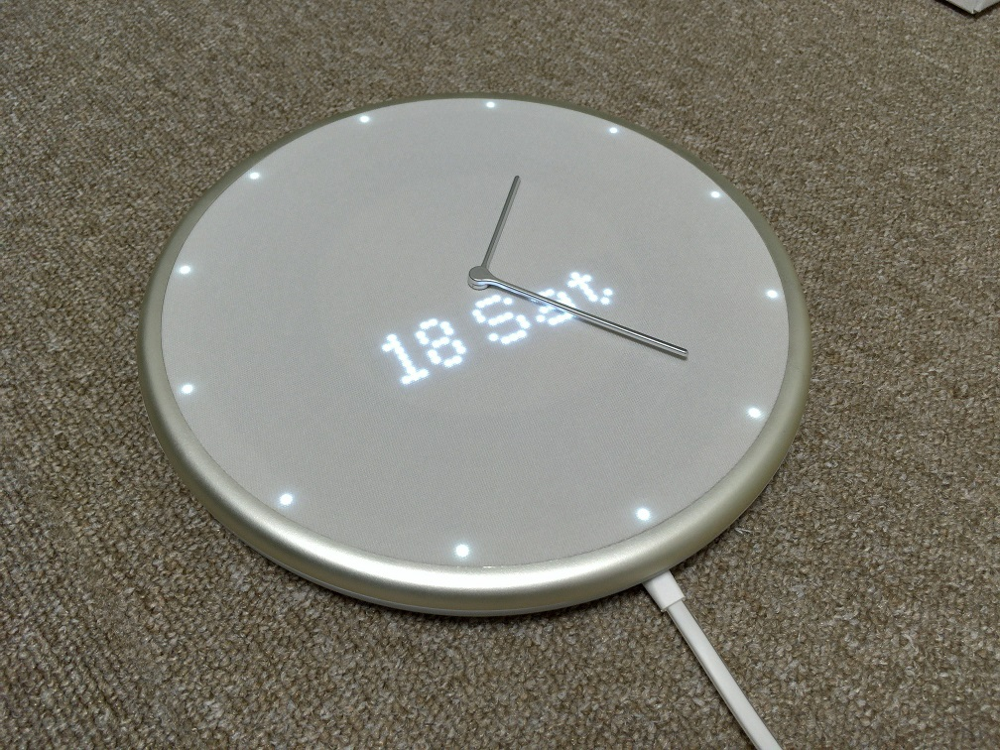
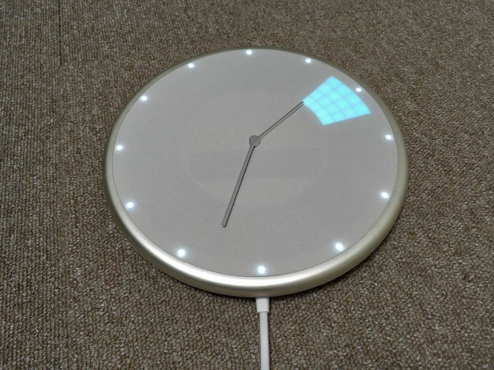
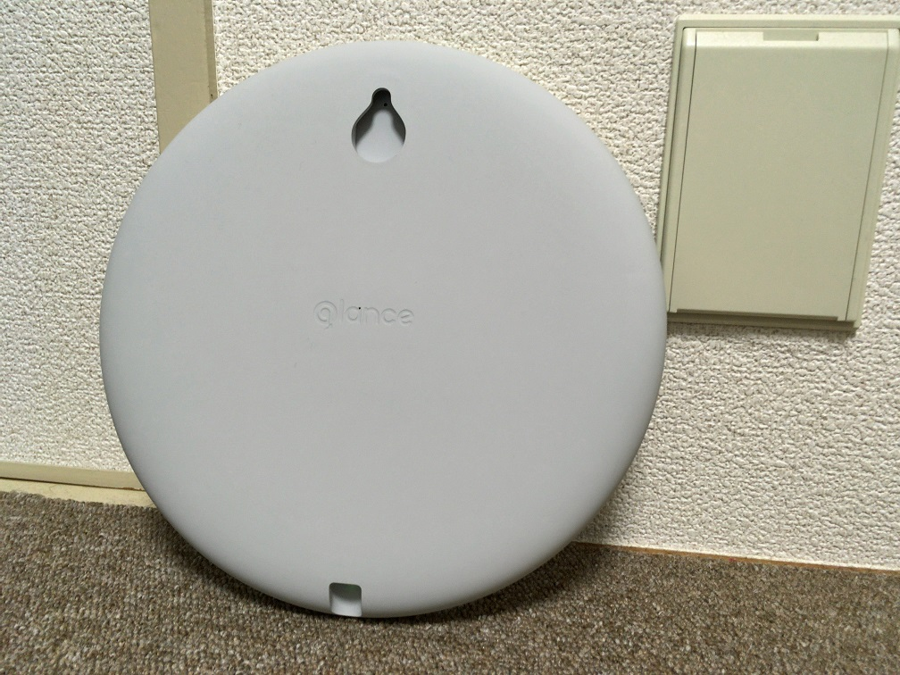
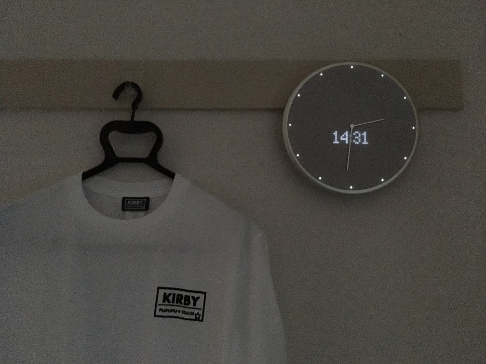
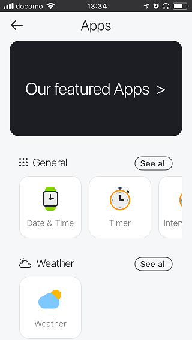
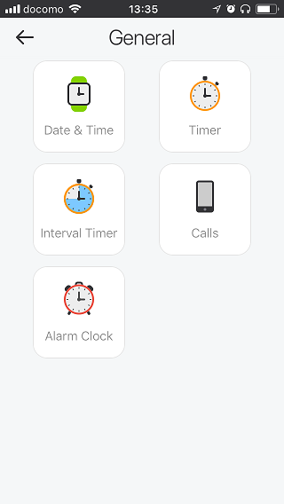
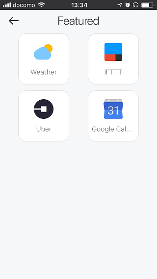

Glance Clockが届いたので開封レビュー
2017-11-18 13:41:22 +0900 JST
Categories: Gadget
Indiegogo というクラウドファンディングサイトで Glance Clock というガジェットがすごく面白そうに感じたのでBackerになっていましたが、ついに完成したようで、Glance Clockをつい先ほど受け取ったので開封レビューをします。
Glance Clockとは

簡単に言うと、アナログ時計+LED+IoTのデバイスで、スマートフォンとペアリングして様々な情報をLEDで表示できるデバイスとなっています。
LEDには予定を表示したり、タイマーを表示したりと時間に関連する情報を表示できます。
LEDは何色か表示でき、簡易ですがスピーカーもついているので、オフィスとかにあるとちょっとアクセントになっていいかもしれませんね。
現在はiPhoneとのペアリングにのみ対応しますが、今後はAndroidも対応するようです。
また、Wi-Fiモデルも用意される可能性があるようです。届いたモデルはBluetooth版でした。
開封の儀


本体と充電ケーブルとACアダプターだけ。最近の製品は同梱品が少なくて、これだけで動くんけ？と思っちゃういそうで、でもしっかりと動くのはすごいですね。
ここでいきなりびっくりしたのですが、Glance Clockはなんと充電式で、常にACアダプタに繋がなくてもしばらくは動作することができます。
さすがに届いた直後ではバッテリーがかなり少なかったので充電しながらセットアップを進めていきました。

右上にあるボタンを長押しすると起動しました。
Hello!と表示されたあとにiPhoneとのペアリングを済ませるといきなり針がぐるぐると周り出しました。アプリの説明によるとアナログ針のキャリブレーション機能があるようです。
その後、針が止まって日付と時間が表示されました。これでセットアップが完了のようです。

さっそくカレンダーと連携してテキトーに1時間の予定をつっこんでみました。12hの尺度でこの時間帯に予定があるというのをLEDで知らせてくれました。
予定の名前も中央のLEDで表示できるようですが、想像通り日本語は???と表示されてしまいました。
LEDの解像度が縦10pxぐらいしかないのでしょうがないですね。
壁にかけてみる

時計を壁掛けできるよう切り欠きがちゃんと用意されています。

KIRBY!
なんとここで第2のびっくりが。明るさセンサーがついているようで、LEDの明るさを自動調整してくれる機能がついていました。これだと夜間でLEDがまぶしすぎるといったこともなく、気が利いているなぁと感じます。
これとは別におやすみモードもあり、夜間はLEDの明るさを抑えたり音を鳴らさないような制御もできます。
気になるアプリ
ではGlance Clockはどれぐらい機能があるか、どのアプリと連携できるか見ていきます。
App Storeから専用のアプリを使って連携ができます。

ではまずGeneralから。

ただの時計表示からタイマー、アラームとCallsがあります。CallsはiPhoneからの着信を伝えてくれるようです。
Interval TimerにはPomodoroというモードもあります。なかなかわかっているじゃないですか😊

Productivityには天気、カレンダー、メール、Todoと連携ができます。今のところ天気とGoogleカレンダーを連携させてみました。
Googleカレンダーは自分のカレンダー1つのみ連携ができるようです。

最後にFeatureですがUberと連携できるようですね。イメージ的にはUberが到着したら知らせてくれるような感じっぽいです。
そして IFTTT 連携ですね。これはｱﾂﾓﾘｨ!ですね。まだ連携はできてないですが、天気などはIFTTTをトリガーに表示できたりするのかな？
駆け足ですが、Glance Clockの開封レビューでした。開発ブログを見るとBluetoothなのでBeacon的な使い方も現在模索中のようです。いろいろと楽しみなデバイスでした。